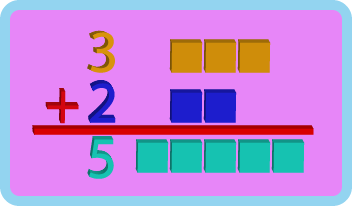
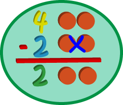
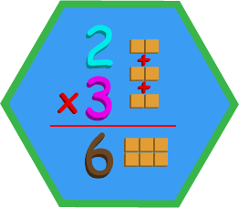
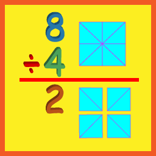

Las Operaciones Matemáticas
Son las reglas establecidas para obtener otras cantidades o valores matemáticos, las más básicas y de gran importancia son, la suma, la resta, la multiplicación y la división. A continuación, te explicare cada una de ellas.
La Suma
Se representa con el signo mas (+) y quiere decir que unimos dos o más cifras numéricas para que se vuelva una sola, las cifras que se suman se le llaman sumandos y el resultado final es la suma total.
La Resta
Se representa con el signo menos (-) y consiste en reducir o quitar una cantidad de un valor para que nos quede uno más pequeño, es lo contrario de la suma, sus partes se llaman minuendo y sustraendo, el resultado final es resto o diferencia.
La Multiplicación
Su signo es (x) que parece una equis, pero no es lo mismo y se le llama (por), esta operación se realiza mediante la suma de un número por el mismo número tantas veces como es señalado y su resultado es conocido como producto.
La División
Su signo es (÷) y consiste en descomponer un numero en tantas partes como así lo indica otro número, cada número se denomina dividendo y divisor. Esta operación es lo contrario de la multiplicación.
